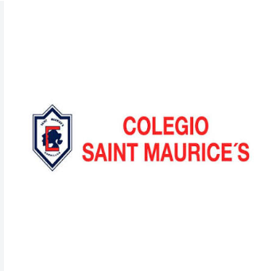

Liceo comercial Vate Vicente Huidobro
Es un establecimiento de educación técnico-profesional ubicado en la comuna de San Ramón, Santiago, perteneciente a la red de la Fundación Educacional Comeduc.
- Historia: Fue fundado el 2 de febrero de 1966, originalmente como un centro educativo en La Granja, antes de trasladarse y adoptar su estructura y nombre actuales.
- Oferta académica: Ofrece formación técnico-profesional en especialidades como Contabilidad y Programación, orientada a la inserción laboral rápida y exitosa.
- Ubicación: Se encuentra en la calle Doñihue 2030, San Ramón, Santiago.
- Origen del nombre: Rinde homenaje al insigne poeta chileno Vicente Huidobro (conocido como el "vate" o creador del creacionismo).

Sunflower School
El Colegio Sun Flower School de Labranza (Temuco) es un establecimiento educacional de orientación cristiana perteneciente a la Fundación Educacional Monte Grande.
- Ubicación y Contacto: Se encuentra en la zona de Labranza, Temuco, con teléfono de contacto +56 45 232 2381
- Horario de atención general: Lunes a jueves de 9:15 AM a 3:35 PM; viernes de 9:15 AM a 1:15 PM (sábados y domingos cerrado).
- Orientación y Actividades: Es una comunidad educativa de inspiración cristiana que realiza diversas actividades formativas, artísticas y de integración (como talleres de educación vial, semanas en inglés y celebraciones tradicionales)
- Admisión: Ya se encuentran operando los procesos e informativos de admisión escolar (como el periodo para el siguiente año académico).

Colegio Saint Maurice's
Es un establecimiento educacional particular subvencionado con régimen de financiamiento compartido, de orientación laica, ubicado en la comuna de Cerrillos, Santiago
-
Ubicación El Mirador 1543, Cerrillos, Santiago.
- Contacto y Teléfono: Teléfonos 229047955 / 222755233, correo electrónico colegiosaintmaurices@gmail.com.
- Historia:Fundado en marzo de 1978 por María Angélica Larrabe Morán, cuenta con reconocimiento oficial y destaca por una trayectoria enfocada en la formación académica y valórica.
